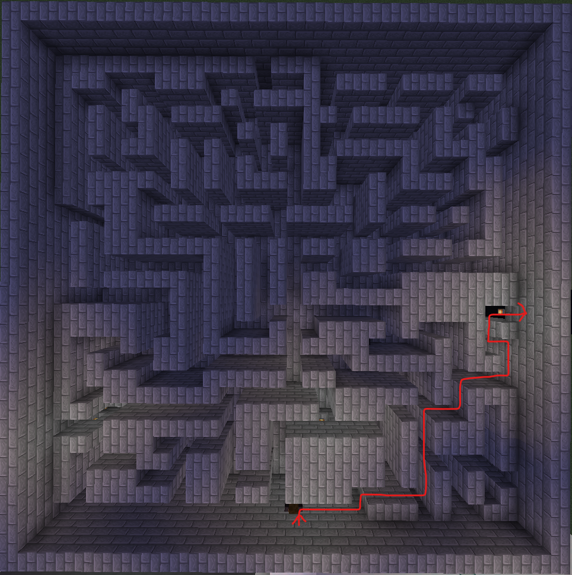
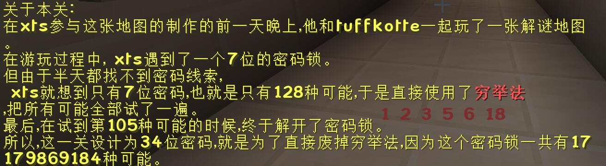
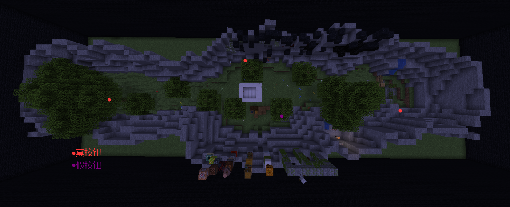

by xtsdcb69
如要查看成就获取方式，请前往 成就 + 彩蛋 。
如何开始游戏
大厅: Re6 | 加工: xtsdcb69
在牛奶雕像处掉下去，按下按钮。
第 1 关 - 别踩白块 - ★★★☆☆
创意&创作: Re6 | 加工: xtsdcb69 | 测试: xtsdcb69, tuffkotte, Re6
从起点挑掉终点即可，注意不要碰到白色混凝土粉末。
第 2 关 - 射♂ 击游戏 - ★☆☆☆☆
创意&创作: Re6 | 加工： xtsdcb69 | 测试: xtsdcb69, Re6
从右侧的箱子里取出弓和箭，射击黄色羊毛上的按钮，然后打开物品栏，取出放在头上的压力板，放到石砖上。
第 3 关 - milk boy playing♂dark♂game in dark♂underground♂ arena - ★☆☆☆☆
创意&创作: Re6 | 加工： xtsdcb69 | 测试: xtsdcb69, Re6
按照图示路线走。
第 4 关 - 逃离实验室 - ★★★★★
创意&创作: xtsdcb69 | 加工: tuffkotte | 测试: xtsdcb69
离开玻璃舱室后往后走，拉下SWITCH告示牌下的拉杆。
记住B1到B6保险桶上的单词的首字母: h, a, c, t, u, l.
站到保险桶上，跳上梯子，往上走进入跑酷房间，然后通过跑酷。
在有铁活板门的房间里抬头，打开上面的箱子并取走走廊钥匙，然后到箱子的右边获取告示牌上的信息: 4 >> 1, 意为第四位的密码是1.
拉下拉杆，到达有安全计算机的房间后离开，放置钥匙，进入走廊。
在走廊的桌子靠近走廊门的下面获取告示牌信息，这些信息的意思是 A B C D E F G .. 对应 1 2 3 4 5 6 7 .. 又对应 0 1 0 1 0 1 0 ..
将之前的 h, a, c, t, u, l 代入，得到 1 0 0 1 0 1. 右边还有个牌子，写着: B1 ~ B6, 7 ~ 12，意思是B1 ~ B6是密码的第7~12位。
打开下面的箱下箱，取走网络系统供电开关。
进入走廊右侧的第二个房间 (Electricity System)，将网络系统供电打开。
回头进入Network System，对网络系统人工操作电脑进行操作。
出门往右走，看到墙上的NOTE BAR，获取信息:
DON'T ACCESS DT'S COMPUTER!!!!!!!!!!!!!!!!! <--- (IF U HAVE PASSWORD) WHY????? BC IT'S THE PASSWORD!!
(不要访问Donald Trump的电脑!!!!!!!!!!!!!!!!! <--- (如果你有密码) 为什么??? 因为那是密码!!)
继续往前走进入Technology Support，对坐在最里面的安全计算机负责人Kaguya Miller的电脑进行操作。
因为该人是安全计算机负责人，所以现在离开走廊到达有安全计算机的房间，对安全计算机进行操作。
回到Technology Support，对坐在最靠近门口的Donald Trump的电脑进行操作，获取信息: CHINA! 此时你将获取密码房钥匙。
查看电脑上的日历，显示为13月17日，意为这五个字母是密码的第13位至第17位。
右边的Note上的时间7:12后面还有一句 "SAME!!!" ，意为这五个字母的编码方式与第7位至第12位的方式相同，由此可得出 0 1 0 1 0。
进入走廊，走到最终房间密码房(没有告示牌)。进入后，你会获取一段关于本关的小故事。故事中，"穷举法"三个字被红色加粗了出来，同时物品栏上方也会以同样的格式(红色加粗)短暂地显示 "1 2 3 5 6 18"，意思为1 2 3 5 6 18位密码需要通过穷举法获得。
在一排拉杆的左边有一个告示牌，写着: 18 DIGITS --> BINARY (二进制), 意为你需要将18位的密码转换为二进制再输入。
经过穷举法，可以得到密码为10111 01001 01010 100，再将其转换为二进制可得10010 10100 10100 11000 00010 10001 0010. 拉下拉杆即为1, 不拉拉杆即为0. 将其输入到密码锁即可。
随后，你将得到出口钥匙。离开走廊，放置钥匙，到达出口后离开，进入森林。
往右边走，绕到木头废墟后面去，牌子上写着"3 BUTTONS!!"，意味着你需要找到3个按钮。
然后，你找到了三个按钮并按下，然后跳入了坑中，发现并没有什么事情发生。
原来，一共有四个按钮，而其中一个是假的，按下后需要重新按正确的三个按钮才能前往下一关，这个假的按钮就是箱子旁边的树下的按钮。
而其中一个正确按钮在屏障后面，你需要跑酷穿过屏障。
回到那个箱子，爬上旁边的树，找到屏障的缝隙穿过后，按下大树后面的按钮，然后再回去，跳入坑中，即可到达下一关。
第 5 关 - 办公大楼的信仰之跃 - ★★★★☆
创意&创作: xtsdcb69 | 加工: tuffkotte | 测试: xtsdcb69
这一关其实就是跳水。每一层楼的地板都有一个L字形的洞，这是官方通道，出门右拐后就能看到。当然你也可以试着从别的地方下去。
最低层楼有蓝色方块充当假水，需要注意。
随后，找到角落的石头按钮，按下后马上往门跑。如果晚了，可以多试几遍。
刚出门，就会遇到一个大坑，不过是假的，直接走过去就行。按下"下一关"按钮后，右边的通道会打开，接着墙上的牌子会写这"LAVA = DIE", 也就意味着你一碰到岩浆就会死。
完成跑酷，跳入坑中，即可进入下一关。
第 6 关 - 逃♂离老旧实验室 - ★★★★★
创意&创作: tuffkotte | 加工: xtsdcb69 | 测试: xtsdcb69, tuffkotte
跑酷到终点，然后往左下方的水跳，游泳通过缝隙按下按钮传送到第二小关，继续跑酷到终点。
第 7 关 - 极限找不同 - ★★★☆☆
创意&创作: xtsdcb69, tuffkotte | 加工: sky_bow_chrs | 测试: xtsdcb69
通过地图1以及地图2的比较，可以发现树的第3层树叶 (从上往下数) 少了一块，所以选择树叶。
第 8 关 - 垂直下挖...? - ★★☆☆☆
创意&创作: xtsdcb69 | 加工: Re6 | 测试: xtsdcb69
按下前面的按钮，然后往下挖，挖到踏板后等待一会，游戏将正式开始。在100秒内往上挖100个方块后，到达顶部即完成关卡。